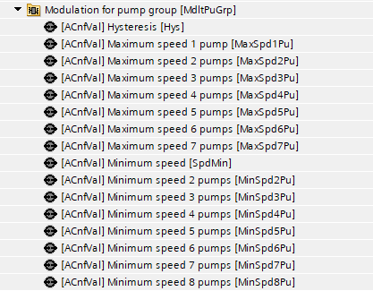
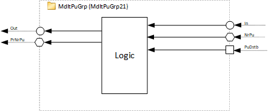
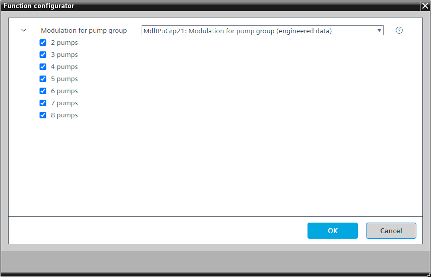

[MdltPuGrp21] 泵组调节
Program block, name / node subtype: [MdltPuGrp21] Modulation for pump group
Library hierarchy: Universal functions
Family: MdltPuGrp
项目树 | 图表 |
|---|---|
|
 |  |
Configurator


程序块存储在没有 I/Os. 的库中 使用auto-create and auto-connect函数创建 I/Os 和 /or 将它们连接到接口块，例如 R_A、CMD_B。或者，从包含库中预定义 I/Os 的文件夹中取出 I/Os，并从工厂中取出 /or，并将它们连接到接口块。
姓名 | 描述 | 类型 | 报警/通知类 | 趋势/类型 |
|---|---|---|---|---|
SpdMin | Minimum speed | ACnfVal: Analog configuration value | No | No |
描述 |
|---|
2 pumps |
3 pumps |
4 pumps |
5 pumps |
6 pumps |
7 pumps |
8 pumps |